Тринисторы
Тринистором (триодный тиристор, трехэлектродный тиристор) называют переключательный компонент с тремя электронно-дырочными переходами, и тремя выводами – анодом, катодом и управляющим электродом. Тринисторы обладают аналогичной динисторам структурой, а отличие состоит в наличии управляющего электрода – дополнительного вывода, подключённого к одной из баз. Если через управляющий электрод тринистора пропустить отпирающий ток, то тринистор перейдёт в открытое состояние.
В зависимости от того, к какой именно из баз будет подсоединён управляющий электрод, можно организовать включение тринистора при приложении отпирающего напряжения между управляющим электродом и либо анодом, либо катодом.
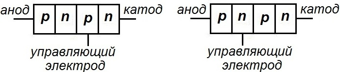
слева - с управлением по аноду, справа - с управлением по катоду
Вольтамперная характеристика тринистора (рис. 2) похожа на вольтамперную характеристику динистора. Однако отпирание тринистора обычно происходит при существенно более низком прямом напряжении, чем необходимо динистору, и к открыванию тринисторной структуры приводит протекание тока через управляющий электрод. Чем больше ток управляющего электрода, тем при более низком прямом напряжении тринистор перейдёт в открытое состояние.
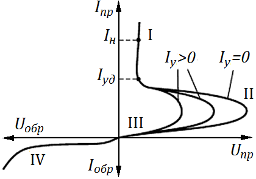
I – участок, на котором тринистор открыт;
II – участки отрицательного сопротивления и пробоя коллекторного перехода;
III – участок запертого состояния тринистора в прямом включении;
IV – участок обратного включения динистора.
Когда через управляющий электрод протекает отпирающий ток, возрастает скорость носителей заряда, которые инжектируются через коллекторный переход, что инициирует принудительное отпирание тринистора. После включения незапираемый тринистор не реагирует на изменение силы тока управляющего электрода. Чтобы закрыть тринистор, необходимо уменьшить силу тока, протекающего по аноду и катоду, ниже тока удержания, либо поменять полярность напряжения, приложенного между анодом и катодом. Если управляющий электрод тринистора обесточен, то тринистор функционирует совершенно так же, как динистор. В незапираемых тринисторах управляющий электрод занимает небольшой участок кристалла полупроводника, ориентировочно в несколько процентов.
Запираемые тринисторы, в отличие от тринисторов, которые были рассмотрены выше, – это полностью управляемые компоненты, и под воздействием тока управляющего электрода они могут переходить из закрытого состояния в открытое состояние, и наоборот. Чтобы выключить запираемый тринистор, нужно пропустить через управляющий электрод ток противоположной полярности, чем полярность, вызывавшая отпирание компонента. Для закрывания изначально открытого запираемого тринистора необходимо уменьшить сумму коэффициентов передачи эмиттерных токов ниже единицы и обеднить базы носителями зарядов, для чего управляющий электрод должен быть распределён по полупроводниковому кристаллу. Для этого управляющий электрод запираемого тринистора, как и катод, выполняют из множества однотипных ячеек, распределённых определённым образом по площади кристалла. Важным параметром рассматриваемых тринисторов выступает коэффициент запирания, который равен отношению тока анода к необходимому для выключения компонента обратному току управляющего электрода.
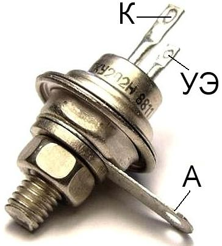 |
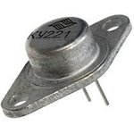 |
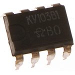 |
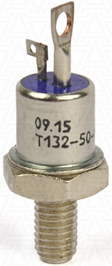 |
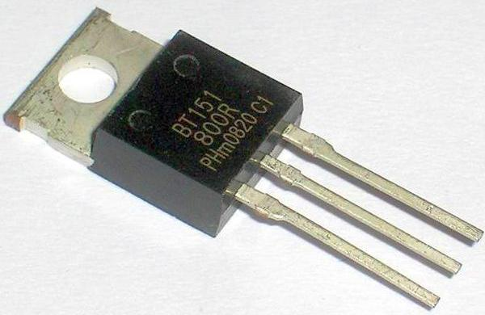 |
| КУ202Н | КУ221 | КУ103В1 | T132-50 | BT151-800R |
Тринисторы находят широкое применение в радиосвязи, радиолокации, устройствах автоматики как управляющие ключи. Они используются в регуляторах мощности, контакторах, мощных выпрямителях и инверторах, ключевых преобразователях устройствах управления электродвигателями. Основным достоинством тринисторов, по сравнению с биполярными транзисторами, является возможность переключения короткими импульсами тока управляющего электрода ( меньшее потребление энергии в цепи управления). К недостаткам тринисторов следует отнести значительно большие времена переключения (единицы миллисекунд - сотни микросекунд).
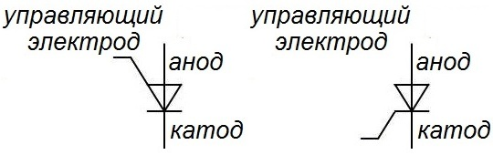
слева - с управлением по аноду, справа - с управлением по катоду
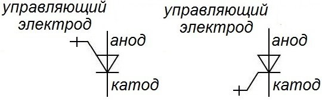
слева - с управлением по аноду, справа - с управлением по катоду
Основные параметры тринисторов
Каждый тринистор имеет определенные параметры, которые есть в справочниках и по которым тринисторы подбирают для данной схемы.
- Ток включения Iвкл (IGT) – пороговое величина тока через управляющий электрод при котором происходит включение тиристора.
- Ток удержания Iуд - минимальный прямой ток, проходящий через тринистор при разомкнутой цепи управления, при котором тиристор еще находится в открытом состоянии.
- Отпирающее постоянное напряжение управления Uy (Uу от) - наименьшее постоянное напряжение на управляющем электроде, вызывающее переключение тринистора из закрытого состояния в открытое, т.е. минимальное напряжение на управляющем электроде, которое открывает тринистор и электрический ток начинает течь через два оставшихся вывода - анод и катод тринистора.
- Максимально допустимый постоянный ток в открытом состоянии Iос.
- Максимальное обратное напряжение Uобр max (Uзс) - максимально допустимое напряжение на тринисторе в закрытом состоянии, при котором тринистор может работать без нарушения его работоспособности.
- Постоянное напряжение в открытом состоянии Uос - падение напряжения на тиристоре в открытом состоянии (1...3 В).
- Среднее значение тока Iос ср - ток, который может протекать через тринистор в прямом направлении без нарушения его работоспособности.
- Постоянный ток в закрытом состоянии Iзс.
- Постоянный обратный ток Iобр.
- Критическая скорость нарастания напряжения в закрытом состоянии (dUзс/dt) crit.
- Критическая скорость нарастания тока в открытом состоянии (di/dt) crit.
- Отпирающий постоянный ток управления Iу от
- Время включения tвкл - время с момента подачи отпирающего импульса до момента, когда напряжение на тиристоре уменьшится до 0,1 своего начального значения (мкс – десятки мкс).
- Время выключения tвыкл - минимальное время, в течение которого к тиристору должно прикладываться запирающее напряжение (десятки – сотни мкс).
- Температура перехода тиристора Tп.
- Максимально допустимая рассеиваемая мощность Pmax
Тринисторная схема управления мощностью
Рассмотрим тринисторную схему управления мощностью в цепи переменного тока. В этой схеме тринистор включен последовательно с активным сопротивлением R в цепь переменного тока, напряжение источника питания которого (U) не превышает максимально допустимое напряжение тринистора как в прямом, так и в обратном направлении.
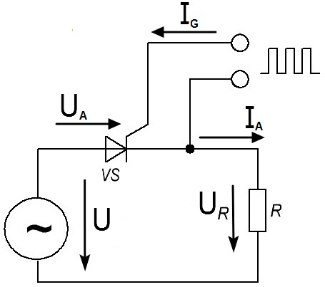 |
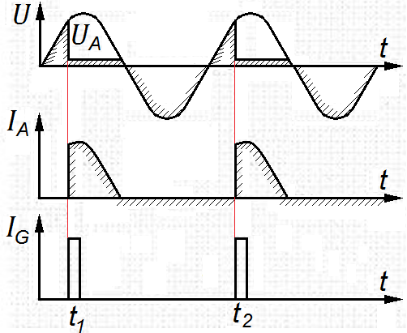 |
| а) | б) |
а - схема, б - принцип фазового управления
Так как тринистор при отсутствии управляющего сигнала закрыт, ток i при положительной полуволне напряжения вплоть до момента времени t1 (рис. 6, б) равен нулю. В этот момент времени подается управляющий сигнал, и тринистор отпирается. После этого ток в течение нескольких микросекунд достигает значения i = U/R (если пренебречь падением напряжения на тринисторе из-за его малости) и течет вплоть до окончания прямой полуволны напряжения. Здесь он обрывается, как только становится меньше тока выключения (удержания) Iвыкл.
В течение обратной полуволны напряжения тринистор находится в закрытом состоянии (i = 0) и лишь при последующей прямой полуволне напряжения в момент времени t2 снова открывается. Изменяя моменты отпирания тринистора, можно плавно регулировать мощность, выделяющуюся в сопротивлении нагрузки. Этот способ использования тринистора называется фазовым управлением.
Управляющий ток может иметь форму короткого импульса. Он должен протекать лишь до тех пор, пока тринистор не переключится в проводящее состояние и механизм внутреннего усиления не сможет поддерживать его в этом состоянии. Управляющий ток, иначе говоря, играет роль разрешающего сигнала, приводящего указанный механизм в действие. В этом и заключается основное преимущество тринистора при переключении тока по сравнению с транзистором при использовании их в качестве ключевых элементов.
Управляющий сигнал на транзистор должен подаваться в течение всего этапа протекания тока. Это вызывает большие потери мощности в цепи управления, что, естественно, крайне нежелательно. Однако наибольшее техническое значение имеют значительные переключаемые мощности, которые могут обеспечить тринисторы. Современные мощные тринисторы достигли мегаваттных областей. Для транзисторов эта граница лежит в пределах нескольких киловатт. Различие обусловлено, прежде всего, тем, что в тринисторах можно осуществлять основной контакт на большей поверхности, чем в транзисторах.